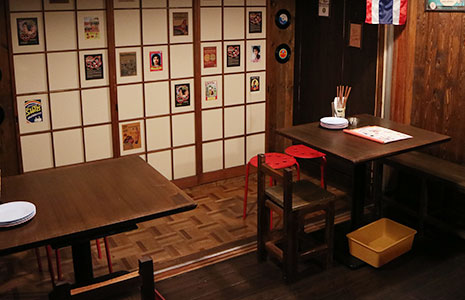
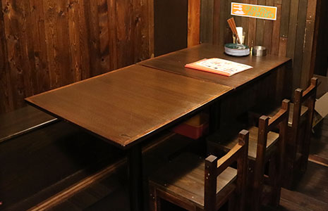
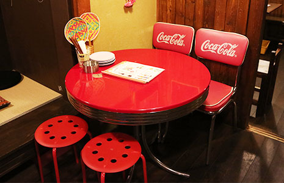
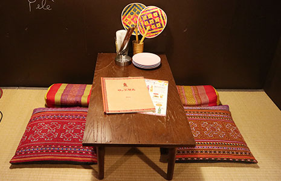
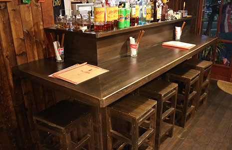
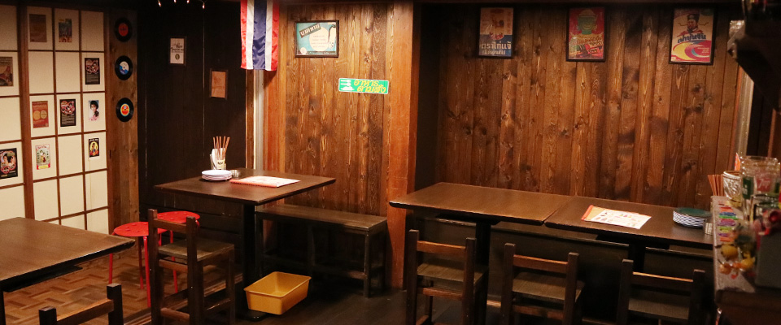

ไก่ย่าง
ガイヤーン
石臼で潰したハーブの秘伝ダレに漬け込み、強火で焼き上げる炭火焼チキン。酒のアテに最高。
タイ各地で出会い、研究を重ねた当店自慢の一皿。
石臼で潰したハーブの秘伝ダレに漬け込み、強火で焼き上げる炭火焼チキン。酒のアテに最高。
香ばしく焼いた豚肉をタイハーブとライムで和えた、酒が止まらない一皿。イサーン地方の名物。
プリプリの海老を丸ごとグリル。自家製シーフードソースで、タイ屋台気分を川崎で。
タイ屋台の定番。鶏の旨味を吸い込んだジャスミンライスと、特製の生姜ダレで。
ようこそ、サワディー兄弟へ。ホームページをご覧いただきありがとうございます。
タイに初めて行ったとき、屋台のおばちゃんが作るカオマンガイに衝撃を受けました。帰国してからもあの味が忘れられず、気づいたらタイ料理屋で働いていました。
タイへの愛とリスペクト——それがこの店の全てです。私がタイで受けた衝撃と感動を少しでも皆様にお届けできたら嬉しいです。
「日本人向けにアレンジしました」——この言葉を使いたくない。
「本物のタイの味」と「日本人にも馴染みやすい味」。この二つは矛盾しない。それが私の信念です。タイ人が食べて「本物だ」とうなずく味を出す。でも、タイ料理が初めての人にも「おいしい！また来たい！」と思ってほしい。その両立を、日本人の料理人として真剣に追いかけています。
ホーリーバジルはタイ直送。ペーストは手作り。そのこだわりを、焼き鳥屋に寄るくらいの気軽さで届けたい。それがサワディー兄弟のスタイルです。
タイ料理ってパッタイとかガパオとか、ランチのイメージが強くないですか？いやいや、酒にぴったりのメニューがたくさんあるんです。当店は大衆酒場として、お酒が進むメニューを揃えています。
タイ料理をもっと身近にしたい。だから値段はギリギリまで抑えています。現金払いのみにしているのもそのひとつ。ご不便おかけしますがご理解いただけると嬉しいです。
タイ料理はたれが決め手！カオマンガイやムーヤーン、エビのグリルなど、当店のたれは市販品を使わず一から手作りしています。スイートチリソースだけは厳選したタイの老舗ブランドをタイから直輸入しています。
当店名物のガイヤーン・ムーヤーンは、にんにくやパクチーの根などの香味野菜を石臼でペースト状に叩き、各種調味料を合わせた秘伝のたれにしっかり漬け込んで強火で焼き上げます。
日本で手に入るスイートバジルとは全くの別物。スパイシーでクローブに似た独特の香りこそが本場ガパオの決め手です。
タイ直輸入の素材と地元の新鮮な食材、両方のいいとこ取りです。
タイでは屋台や街の食堂で食べることがほとんど。おいしいと思ったらすぐ調理場をのぞいて勉強できるんです。屋台の人も、日本人が興味津々で聞くと気前よく教えてくれます。
古民家を自ら改装し、タイから持ち帰った雑貨で空間を作りました。店内の音楽もタイのレコード屋で直接買い付けたもの。お皿もタイの屋台で使われるモノを直接買ってきています。
古民家を自ら改装した、タイへの愛が詰まった空間。
お一人でもグループでも、くつろげる席をご用意しています。

タイのレコードやポスターが彩る、雰囲気のある空間。少人数でゆったりお食事を。

ご家族や仲間と一緒に、ゆったりと囲める大きめのテーブル席です。

レトロ感漂うコカコーラの装飾がお出迎え。フォトジェニックな人気席です。

半個室感のある落ち着く空間。小さなお子様連れの方にもおすすめの座敷席です。

お一人様大歓迎。タイ料理屋で一人飲み、はじめてみませんか？

会社や友人との大人数での宴会・貸し切りにもご対応いたします。お気軽にご相談くださいませ。